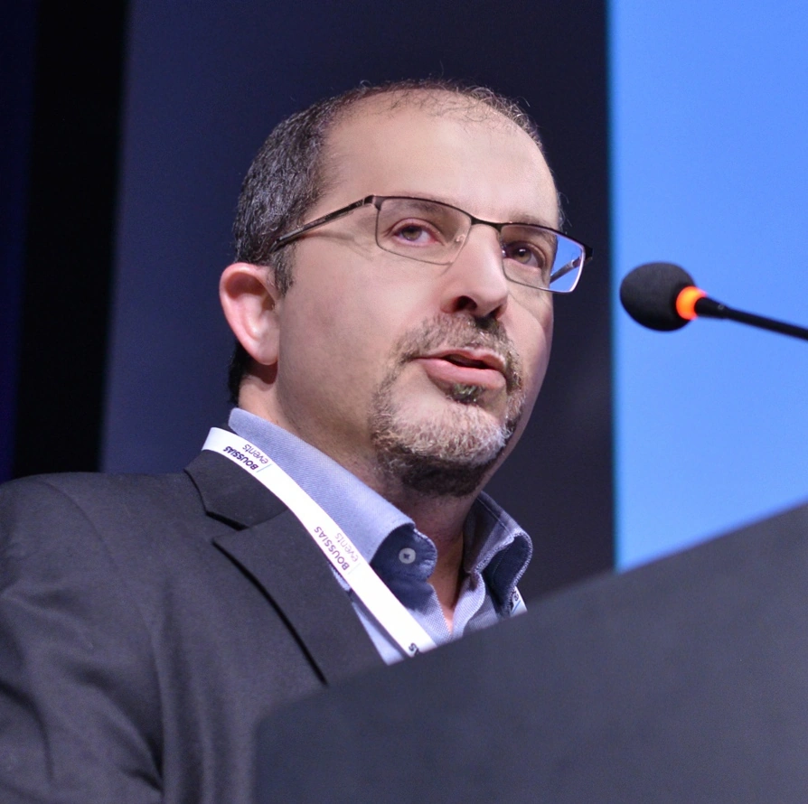
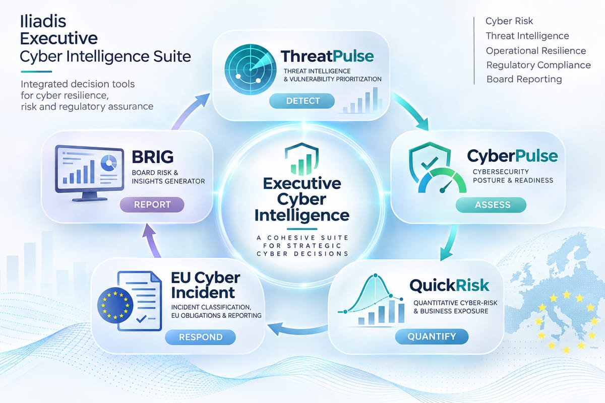
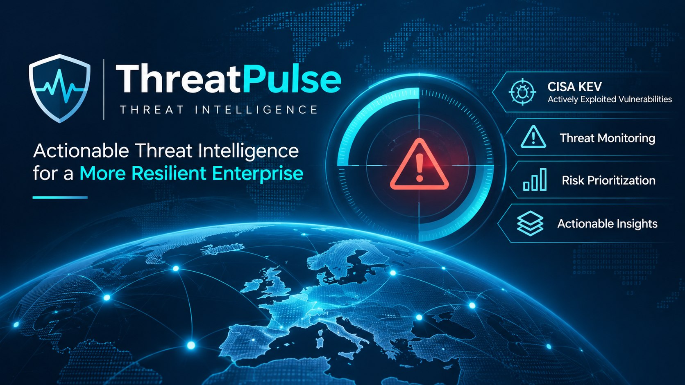
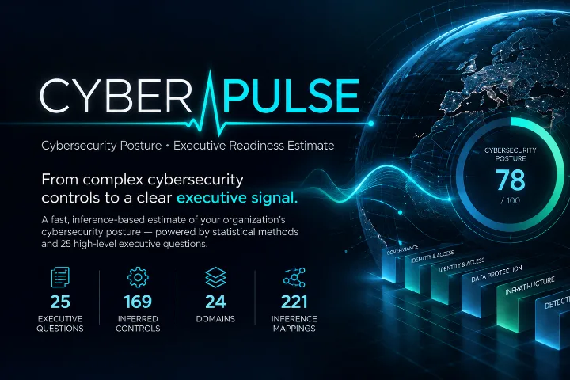
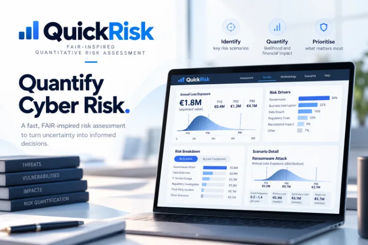

The official software profile
github.com/johniliad is where the software, tooling and open-source projects are published. Every repository, commit and release under that account belongs to the same individual.
Official GitHub identity
Technology & Cybersecurity Executive · CIO / CISO / CTO Leadership · Digital Transformation · Cyber Resilience
This is the official GitHub presence of Dr. John Iliadis — the code, tooling and open-source cybersecurity projects behind an executive practice built on evidence rather than assertion.
The primary professional website is www.iliadis.net. This domain, github.iliadis.net, is its first-party GitHub Pages bridge: the same person, documented once, in a form that both people and machines can resolve.

Three facts that remove any ambiguity about the relationship between this domain, the GitHub account and the primary website.
github.com/johniliad is where the software, tooling and open-source projects are published. Every repository, commit and release under that account belongs to the same individual.
github.iliadis.net is served from the same repository as the profile README. It is not a separate person, company, agency or brand — it is a first-party identity bridge.
The canonical entity is https://www.iliadis.net/#john-iliadis. Every signal on this page — metadata, JSON-LD, rel="me" links — points back to it instead of creating a second identity.
The public half of the Tools4U toolkit — five applications that answer the five questions a board actually asks about cyber risk: what is happening, how prepared we are, what it could cost, what must happen when something goes wrong, and how performance is reported.

ThreatPulse, CyberPulse, QuickRisk, EU Cyber Incident and BRIG form a repeatable cycle: detect, assess, quantify, respond, report. Free to use, self-hostable where open source, and built to show its working rather than assert a verdict.


How prepared we are: a structured assessment of cybersecurity maturity and posture that turns a spread of controls and practices into a defensible readiness position, with the weak points named.

What must happen when something goes wrong: an executive regulatory blast-radius and SLA engine that classifies an incident against DORA, NIS2, GDPR, the EU AI Act and the CRA — with deadlines and EUR-Lex citations, including the DORA RTS 2024/1772 thresholds.
Three of the five applications are published under Apache-2.0 — small, self-hostable PHP/MySQL deployments of the kind a security team can run on infrastructure it already controls, without a SaaS dependency.
| Repository | Purpose | Stack | Licence |
|---|---|---|---|
| ThreatPulse | Threat-intelligence briefings | Python 3 (stdlib only) · PHP · MySQL | Apache-2.0 |
| QuickRisk | Quantitative cyber-risk assessment | React · TypeScript · PHP 8.2+ · MySQL (optional) | Apache-2.0 |
| BRIG | Board-ready security reporting | React · TypeScript · Vite · Chart.js · PHP 8.3+ · MySQL (optional) | Apache-2.0 |
Every entry below is the same individual. Where a platform supports reciprocal verification, the link is declared with rel="me" here and mirrored on the profile itself.
This page is deliberately uninteresting about identity: one person, one canonical identifier, no competing records. The graph lives in this page's <head> as JSON-LD — machine-readable, deliberately not rendered here.
The Person node reuses the primary website's canonical @id instead of minting a fresh one, so entity-resolution systems see one individual rather than two candidates.
rel="me" and rel="author" links are declared here and mirrored on iliadis.net, so both surfaces confirm each other instead of one merely claiming the other.
There is no separate organisation, agency, trading name or social account attached to this domain. If a third party presents github.iliadis.net as anything other than this individual's bridge, it is wrong.
Provenance: both this page and the profile README are published from github.com/johniliad/johniliad, which the graph names as isBasedOn. The repository is the origin of the page, not a competing identity — the canonical entity remains https://www.iliadis.net/#john-iliadis.